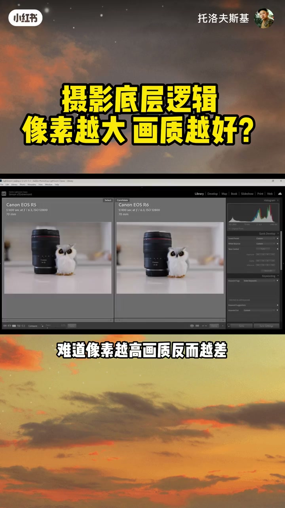
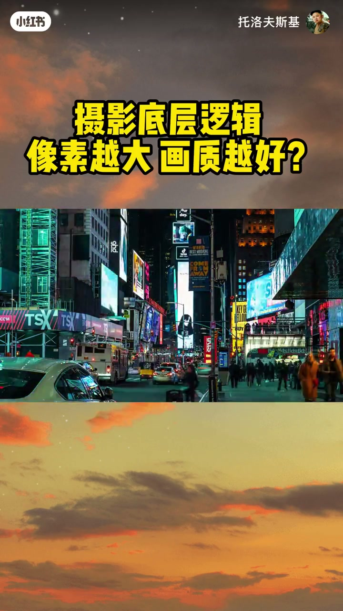
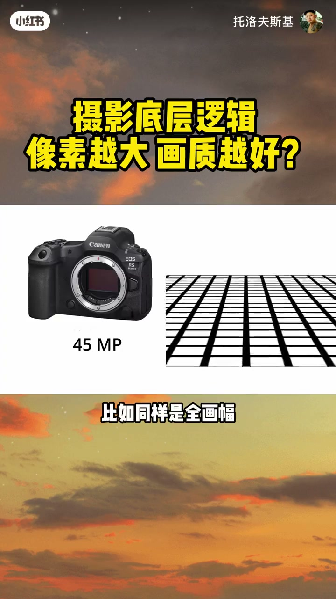
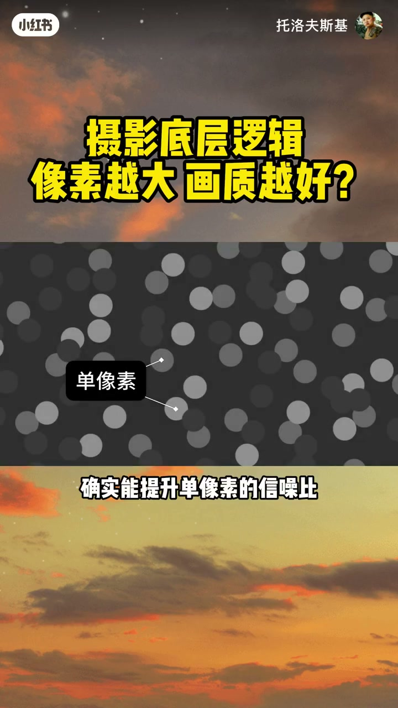
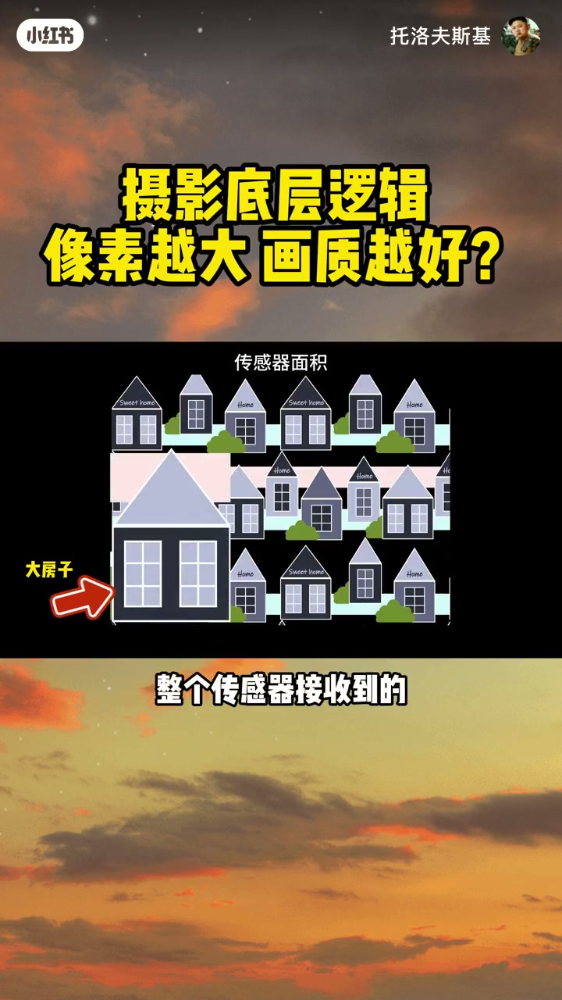
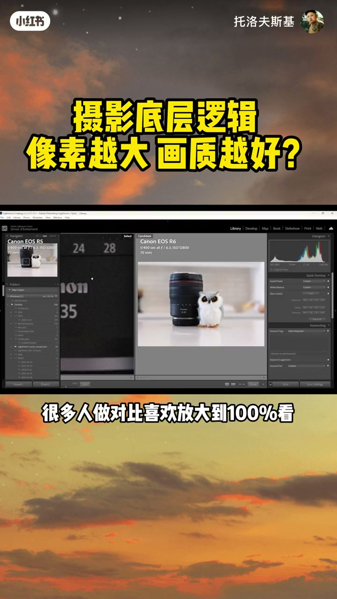
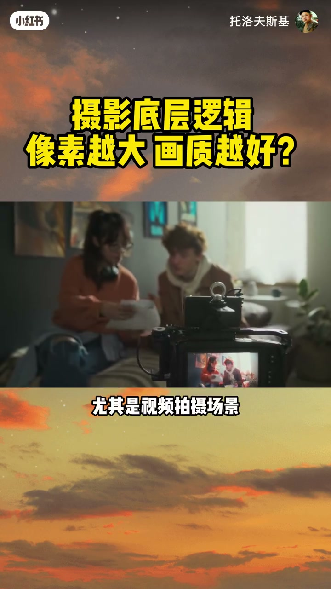
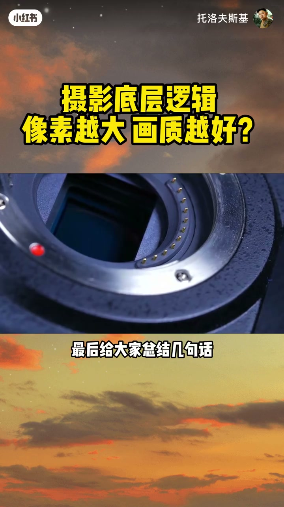

内容要点
「摄影底层逻辑 ：像素越大，画质越好？」教程要点：为什么很多2400万像素相机 → 在夜景高感下看起来反而比4500万像素更干净 → 为什么手机不断提高像素数量 → 很多专业相机的主流机型；详见正文。
知识结构
为什么很多2400万像素相机
小像素像很多个小杯子
如果把两张图放大到相同的画面视野
- 为什么很多2400万像素相机
- 在夜景高感下看起来反而比4500万像素更干净
- 为什么手机不断提高像素数量
- 很多专业相机的主流机型
- 却依然选择2400万、2600万级别
为什么很多2400万像素相机
00:00–01:46为什么很多2400万像素相机
为什么很多2400万像素相机；在夜景高感下看起来反而比4500万像素更干净；为什么手机不断提高像素数量；很多专业相机的主流机型；却依然选择2400万、2600万级别；难道像素越高 画质反而越差；还是像素越大 才是真正的画质密码；答案其实没有这么简单；今天几分钟 我们一次讲透；大像素和高像素；到底谁才是真正的画质王者；先给大家一个明确的结论；两者没有绝对的高低；只是适配的场景完全不同；大像素的强项在高感画质、动态范围和视频拍摄；高像素的优势在细节记录、后期裁切和大尺寸输出；很多人以为4500万像素一定比2400万更强；但真实情况是；在很多夜景和视频场景；2400万甚至可能占优势；选对了场景 低像素也能打赢高像素；所有讨论我们先限定一个前提；今天的对比都建立在传感器尺寸完全相同的基础上；不涉及全画幅、APS-C、M43的画幅差异；也不考虑镜头的镜光量区别；我们只聊同尺寸传感器下；单个像素大小带来的影响；先补一个基础概念；传感器上的感光单元叫光敏元件；成像后才叫像素；同尺寸传感器下；单个像素越大；通常意味着像素总数量越少；比如同样是全画幅；2500万像素的机型单个像素尺寸是4.83微米；而2400万像素的机型；单个像素能达到5.96微米；很多人说大像素能捕捉更多光线；这句话对 但也不全对；我们用接雨水来打比方；大像素像一个大桶


01:44–03:18小像素像很多个小杯子
小像素像很多个小杯子；对单个感光单元来说；大桶确实能接到更多雨滴；但是同样曝光参数下；单位面积获得的光并没有变多；所以照片整体亮度不会因为像素变大而改变；但捕捉到的光子总量更多；确实能提升单像素的信造比；让画面更干净；因为信号增长是线性的；而散力造身的增长只有信号的平翻根；采集到的光子越多；有效信号和噪点的比值就越高；这种噪点是光线本身的随机特性；属于自然存在的误差；说到这里你可能会觉得；那大像素不就是更好吗；其实这就是最大的误区；一个大桶和很多个小杯子；摆在鱼里接到的总雨水是一样的；只是分配方式不同；大像素传感器也是同理；理论上在同尺寸同曝光条件下；整个传感器接收到的总光子数量基本接近；差别只在单个像素的分配方式；所以大像素提升的是单个像素的质量；而不是凭空增加整块传感器获得的光；我们看照片看的是整张图的效果；不是盯着单个像素看；早期传感器中；像素之间的非感光区域会影响采光效率；但现代倍照式传感器已经大幅降低了这种差异；在现代传感器上；这个影响通常已经非常小；真正让大家觉得大像素画质更好的；其实是我们看照片的方式；很多人做对比喜欢放大到100%看；这本身就是不公平的；高像素机型的100%放大；实际画面倍数更大；相当于把噪点放的更大


03:17–04:35如果把两张图放大到相同的画面视野
如果把两张图放大到相同的画面视野；或者直接看完整全图；又或者把高像素图；缩放到和低像素一样的尺寸；两者的噪点表现会非常接近；当然大像素也有自己不可替代的优势；更高的满景容量；在读取噪声等其他技术条件接近的情况下；通常有利于提升动态范围；单像素噪点更少；后期降噪的工作量也更小；尤其是视频拍摄场景；视频很少需要裁切；分辨率要求没有照片高；部分高像素机型为控制处理压力；视频输出时可能采用裁切、像素合并等方式；相比之下；大像素机型通常更容易降低读取压力；在部分视频场景下表现更稳定；反过来；高像素的核心优势就是细节；如果你需要裁切二次构图；或者要打印超大尺寸的照片；高像素能记录的细节会丰富得多；但相应的；它对镜头锐度的要求也更高；只有镜头素质跟上；才能发挥出高像素的全部实力；最后给大家总结几句话；大像素不是让相机获得更多光；而是让每个像素装下更多光子；高像素赢在细节；大像素赢在容错；高像素让你裁得更远；大像素让你拍得更稳；相机没有错；它只是有自己的工作方式；选对适合自己的；才是最好的




口述/画面要点（40段）
结合 Whisper medium 与画面大字整理；专有名词已校对。
为什么很多2400万像素相机
在夜景高感下看起来反而比4500万像素更干净
为什么手机不断提高像素数量
很多专业相机的主流机型
却依然选择2400万、2600万级别
难道像素越高 画质反而越差
还是像素越大 才是真正的画质密码
答案其实没有这么简单
今天几分钟 我们一次讲透
大像素和高像素
到底谁才是真正的画质王者
先给大家一个明确的结论
两者没有绝对的高低
只是适配的场景完全不同
大像素的强项在高感画质、动态范围和视频拍摄
高像素的优势在细节记录、后期裁切和大尺寸输出
很多人以为4500万像素一定比2400万更强
但真实情况是
在很多夜景和视频场景
2400万甚至可能占优势
选对了场景 低像素也能打赢高像素
所有讨论我们先限定一个前提
今天的对比都建立在传感器尺寸完全相同的基础上
不涉及全画幅、APS-C、M43的画幅差异
也不考虑镜头的镜光量区别
我们只聊同尺寸传感器下
单个像素大小带来的影响
先补一个基础概念
传感器上的感光单元叫光敏元件
成像后才叫像素
同尺寸传感器下
单个像素越大
通常意味着像素总数量越少
比如同样是全画幅
2500万像素的机型单个像素尺寸是4.83微米
而2400万像素的机型
单个像素能达到5.96微米
很多人说大像素能捕捉更多光线
这句话对 但也不全对
我们用接雨水来打比方